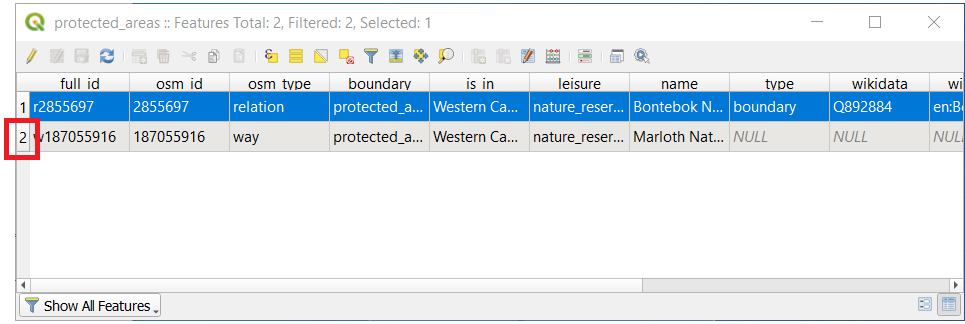
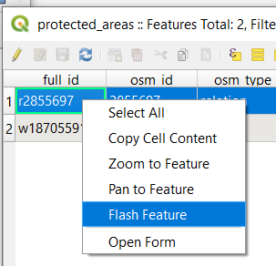
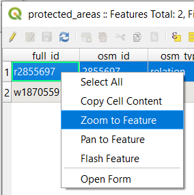

重要
翻訳は あなたが参加できる コミュニティの取り組みです。このページは現在 100.00% 翻訳されています。
3.1. レッスン: ベクタ属性データ
ベクタデータは、GISの日常的な使用において間違いなく最も一般的な種類のデータです。ベクタモデルは、ポイント、ライン、ポリゴン（および3Dデータの場合はサーフェスとボリューム）を使用して地理的地物の位置と形状を表し、その他のプロパティは属性として含まれます（QGISではよくテーブルとして表示されます）。
今までは、地図に行った変更はどれも、表示されているオブジェクトに影響されませんでした。言い換えれば、全ての土地利用エリアは同じように見え、そして全ての道路は同じように見えます。地図を見ている人は、見ている道路については何も分かっていません。分かっているのは、その地域にその形状の道があるということだけです。
しかし、GISの全体強みは、地図上に表示される全てのオブジェクトが属性も持っていることです。GISでの地図はただの絵ではありません。それらは場所内のオブジェクトだけでなく、それらのオブジェクトに関する情報も表しています。
このレッスンの目標： ベクタデータの構造について学び、オブジェクトの属性データについて探ります
3.1.1. ★☆☆ （初級レベル） 理解しよう: レイヤ属性を表示する
作業しているデータは、オブジェクトが空間の どこ にあるかを表すだけでなく、それらのオブジェクトが 何 であるかを語っていることも、知っておくことが重要です。
前の演習から、地図に protected_areas レイヤが読み込まれているはずです。読み込まれていない場合は、ディレクトリ exercise_data/shapefile に protected_areas.shp という ESRI Shapefile 形式のデータセットがあります。
保護地域を表すポリゴンが 空間データ を構成していますが、 属性テーブル を調べることで、保護地域についてより詳しく知ることができます。
レイヤ パネルで、
protected_areasレイヤをクリックして選択します。メニューで、
 属性テーブルを開く ボタンをクリックします（トップにあるツールバーのボタンからもアクセスできます）。これにより、
属性テーブルを開く ボタンをクリックします（トップにあるツールバーのボタンからもアクセスできます）。これにより、protected_areasレイヤの属性テーブルが表示された新しいウィンドウが開かれます。
行は レコード と呼ばれ、ポリゴンなど、キャンバスマップ中の 地物 に関連付けられています。列は フィールド （または 属性 ）と呼ばれ、「name」や「id」など、列を説明するのに役立つ名前が付いています。セル内の値は 属性値 と呼ばれます。これらの定義はGISで一般的に使用されているため、よく理解しておくとよいでしょう。
protected_areasレイヤには2つの 地物 があり、マップキャンバスに表示されている2つのポリゴンで表現されています。注釈
フィールド と 属性値 が何を表しているかを理解するには、属性値の意味を説明するドキュメント（またはメタデータ）を見つける必要がある場合があります。これは通常、データセットの作成者から入手できます。
次に、属性テーブルのレコードが、マップキャンバス上に表示されるポリゴン地物にどのようにリンクされるかを見てみましょう。
QGIS のメインウィンドウに戻ります。
メニューで、
 地物を選択 ボタンをクリックします。
地物を選択 ボタンをクリックします。レイヤ パネルで
protected_areasレイヤがまだ選択されていることを確認します。マップキャンバスにマウスを移動し、2つのポリゴンのうち小さいほうを左クリックします。ポリゴンが黄色に変わり、選択されたことを示します。

属性テーブル ウィンドウに戻ると、レコード（行）がハイライトされているのが見えるはずです。これが、選択したポリゴンの属性値です。

また、属性テーブルを使用して地物を選択することもできます。
属性テーブル ウィンドウの左端にある、現在選択されていないレコードの行番号をクリックします。
 QGISのメインウィンドウに戻り、マップキャンバスを見ます。2つのポリゴンのうち大きい方が黄色に着色されているのが見えるはずです。
この地物の選択を解除するには、属性テーブル ウィンドウに行き、
 レイヤ内の全地物を選択解除 ボタンをクリックします。
レイヤ内の全地物を選択解除 ボタンをクリックします。
マップキャンバスに表示される地物が多数あり、属性テーブルからどの地物が選択されているかを確認するのが難しい場合があります。地物の場所を特定する別の方法は、 地物をフラッシュ ツールを使用することです。
属性テーブル で、フィールド
full_idの属性値r2855697を持つ行の任意のセルを右クリックします。コンテキスト メニューの 地物をフラッシュ をクリックし、マップキャンバスを見ます。
 ポリゴンが赤く点滅するのが数回確認できるはずです。もし、見逃した場合は、もう一度試してみてください。
もう一つの便利なツールは 地物にズーム ツールで、これはQGISに興味のある地物にズームするように指示します。
属性テーブル で、
full_idフィールドの属性値r2855697を持つ行のセルを右クリックします。コンテキスト メニューで、地物にズーム をクリックします。
 マップキャンバスを見てください。ポリゴンはマップキャンバスの範囲を占めるようになりました。
ここで属性テーブルを閉じてください.
3.1.2. ★☆☆ （初級レベル） 自分でやってみよう: ベクタデータ属性を探索する
rivers レイヤにはいくつのフィールドがありますか？
あなたのデータセットにある
町の場所について少し教えてください。places レイヤの属性テーブルを開いてみてください。ラベル形式で表現するのに一番有用なフィールドはどれでしょう？その理由は？
答え
rivers レイヤには9つのフィールドがあるはずです。
レイヤ パネルでそのレイヤを選択します。
右クリックして 属性テーブルを開く を選択するか、 属性ツールバー （ メニューから有効にすることができます）の
ボタンを押します。列の数を数えます。
より早いアプローチは、rivers レイヤをダブルクリックし、 タブを開き、テーブルのフィールドの番号付きリストを表示することでしょう。
町に関する情報は、places レイヤで利用できます。rivers レイヤでしたのと同様に属性テーブルを開くと、place 属性が
townに設定されている2つの地物: Swellendam と Buffeljagsrivier があります。この2つのレコードから、他のフィールドにコメントを追加することができます。nameフィールドは、ラベルとして表示するのに最も有用なフィールドです。これは、そのすべての値がすべてのオブジェクトに対して一意であり、NULL 値を含む可能性が非常に低いからです。データに NULL 値が含まれていても、ほとんどの場所に名前があれば心配はありません。
3.1.3. 結論
これで使用しているデータ中に実際に何があるかを見るために属性テーブルを使用する方法がわかりましたね。どんなデータセットでも有用なのは気になる属性を持っている場合だけでしょう。どんな属性が必要かを知っていれば、与えられたデータセットが使用できるかどうか、あるいは必要な属性データを持つ別のデータセットを探す必要があるか、すぐに判断できます。
3.1.4. 次は?
異なる属性は異なる目的のために有用です。それらのいくつかは、地図のユーザーが見るテキストとして直接表現できます。次のレッスンでこれを行う方法を学びます。